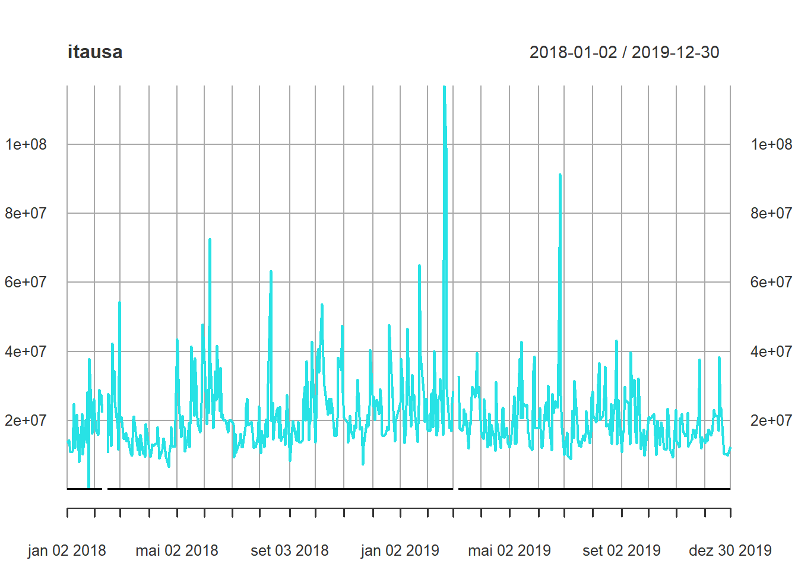
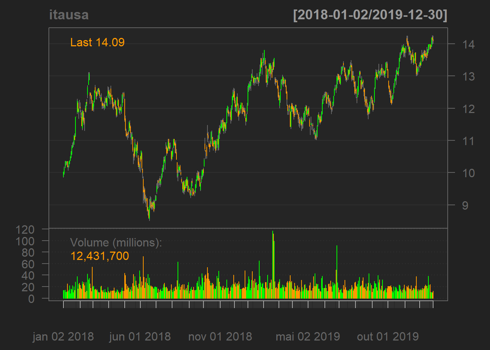
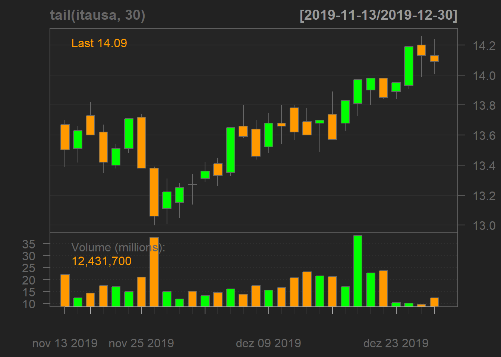
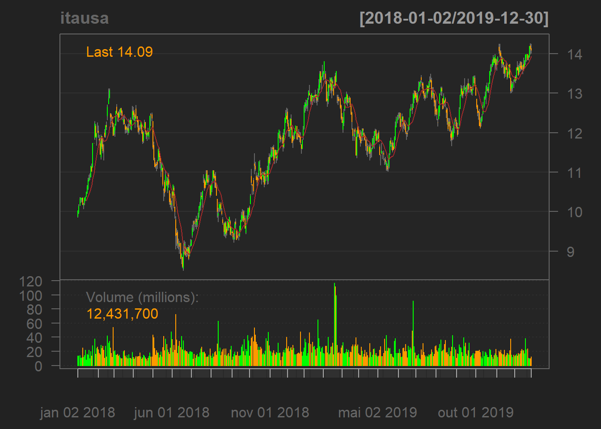
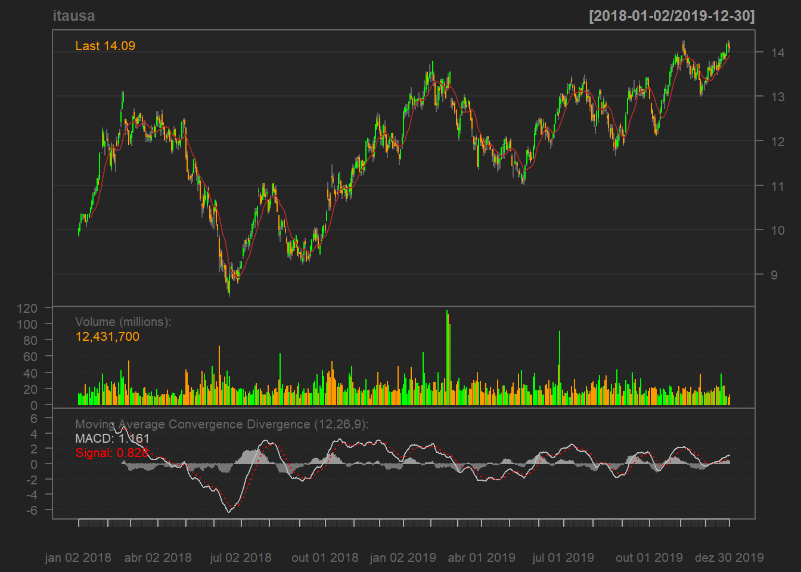

Capítulo 3 Fontes de dados financeiros
3.1 Pacotes
Alguns pacotes do R são ótimas fontes de dados financeiros, sem haver necessidade de buscar em fontes externas.
## Warning: package 'quantmod' was built under R version 4.0.2## Loading required package: xts## Warning: package 'xts' was built under R version 4.0.2## Loading required package: zoo## Warning: package 'zoo' was built under R version 4.0.2##
## Attaching package: 'zoo'## The following objects are masked from 'package:base':
##
## as.Date, as.Date.numeric##
## Attaching package: 'xts'## The following objects are masked from 'package:dplyr':
##
## first, last## Loading required package: TTR## Warning: package 'TTR' was built under R version 4.0.2## Registered S3 method overwritten by 'quantmod':
## method from
## as.zoo.data.frame zoo## Version 0.4-0 included new data defaults. See ?getSymbols.## Warning: package 'GetTDData' was built under R version 4.0.23.1.1 quantmod: séries de preços de ações e índices
O pacote quantmod é uma ótima ferramenta para obter dados de cotações de ações e índices. Funciona muito bem para o mercado brasileiro, apesar de, para alguns ativos, como ETF, existir alguns bugs.
Possui a função getSymbols(), que utiliza a API do Yahoo Finance para obter os dados das cotações. Veja como pode ser usada:
## 'getSymbols' currently uses auto.assign=TRUE by default, but will
## use auto.assign=FALSE in 0.5-0. You will still be able to use
## 'loadSymbols' to automatically load data. getOption("getSymbols.env")
## and getOption("getSymbols.auto.assign") will still be checked for
## alternate defaults.
##
## This message is shown once per session and may be disabled by setting
## options("getSymbols.warning4.0"=FALSE). See ?getSymbols for details.## Warning: USDBRL=x contains missing values. Some functions will not work if
## objects contain missing values in the middle of the series. Consider using
## na.omit(), na.approx(), na.fill(), etc to remove or replace them.Na tabela abaixo vemos uma amostra dos dados:
## USDBRL=X.Open USDBRL=X.High USDBRL=X.Low USDBRL=X.Close
## 2007-01-01 2.1310 2.1325 2.1310 2.1325
## 2007-01-02 2.1335 2.1432 2.1295 2.1310
## 2007-01-03 2.1310 2.1351 2.1278 2.1345
## 2007-01-04 2.1345 2.1430 2.1345 2.1390
## 2007-01-05 2.1390 2.1525 2.1345 2.1470
## 2007-01-08 2.1485 2.1492 2.1425 2.1465
## USDBRL=X.Volume USDBRL=X.Adjusted
## 2007-01-01 0 2.1325
## 2007-01-02 0 2.1310
## 2007-01-03 0 2.1345
## 2007-01-04 0 2.1390
## 2007-01-05 0 2.1470
## 2007-01-08 0 2.1465A função retornou uma tabela com colunas de preço de abertura, maior e menor preço do dia, preço de fechamento, volume negociado e preço ajustado (por conta de fatores como dividendos, split, etc).
Na verdade, o objeto acima não é um data.frame. Veja a classe dele:
## [1] "xts" "zoo"O objeto é das classes xts e zoo, que eram muito usadas no passado. Atualmente, tem-se preferido usar dados na classe data.frame. Contudo, muitos pacotes ainda usam o xts como classe principal, sendo assim importante conhecer essas classes. Voltaremos a falar sobre xts em breve.
Para obter cotações de uma ação do mercado brasileiro, deve-se usar o sufixo “.SA” com o código da ação. Além disso, pode-se alterar outros parâmetros da função, como a data de início da série, para modificar o objeto de retorno:
itausa <- getSymbols("ITSA4.SA",
auto.assign = FALSE,
from = "2019-01-01",
to = "2020-01-02",
periodicity = "monthly")
itausa## ITSA4.SA.Open ITSA4.SA.High ITSA4.SA.Low ITSA4.SA.Close
## 2019-01-01 12.08 13.71 12.08 13.50
## 2019-02-01 13.50 13.80 12.33 12.37
## 2019-03-01 12.40 13.04 11.36 11.98
## 2019-04-01 12.10 12.15 11.31 11.91
## 2019-05-01 11.91 12.45 11.02 12.39
## 2019-06-01 12.42 13.07 11.83 12.89
## 2019-07-01 13.00 13.49 12.43 12.47
## 2019-08-01 12.56 13.16 11.67 12.29
## 2019-09-01 12.27 13.44 11.90 13.18
## 2019-10-01 13.20 13.99 12.11 13.71
## 2019-11-01 13.75 14.25 13.00 13.27
## 2019-12-01 13.31 14.26 13.26 14.09
## 2020-01-01 14.09 14.38 12.72 12.86
## ITSA4.SA.Volume ITSA4.SA.Adjusted
## 2019-01-01 601458600 12.25150
## 2019-02-01 717154000 11.22601
## 2019-03-01 455097200 11.24800
## 2019-04-01 371836700 11.20039
## 2019-05-01 479823200 11.65179
## 2019-06-01 498662200 12.12200
## 2019-07-01 358912200 11.74598
## 2019-08-01 533774500 11.57643
## 2019-09-01 422719300 12.75404
## 2019-10-01 391134100 13.28853
## 2019-11-01 334994100 12.86206
## 2019-12-01 338858800 13.65685
## 2020-01-01 407079600 12.488943.1.2 rbcb: séries de preços de moedas: Mostrar helpers bid e ask
O pacote rbcb foi criado para permitir que o R interaja com a API do Banco Central do Brasil, o Sistema Gerenciador de Séries Temporais (SGS). Para saber quais séries temporais podem ser obtidas com o pacote, recomenda-se ler a documentação do SGS.
Vamos aos principais usos do pacote:
- Função
get_series()
Essa função é usada para baixar dados de uma série temporal. É necessário informar o código da série temporal na API do Bacen. Caso seja desconhecida, você pode usar a função search_series():
##
## Dataset: Taxa de câmbio - Livre - Dólar americano (venda) - diário
## Code: 1
## Conceito: Para efeito das séries temporais, as taxas de câmbio foram agrupadas em dois módulos: I - Taxas administradas ou taxas livres, abrangendo todo o período, desde 1899 e,...
## URL: http://dadosabertos.bcb.gov.br/dataset/1-taxa-de-cambio---livre---dolar-americano-venda---diario
##
## Dataset: Taxas de Câmbio - todos os boletins diários
## Code: NA
## Conceito:
## Séries de boletins diários de taxas de câmbio disponíveis desde 2 de janeiro de 2002, para o euro, e desde 28 de novembro de 1984, para as demais moedas. Para o dólar,...
## URL: http://dadosabertos.bcb.gov.br/dataset/taxas-de-cambio-todos-os-boletins-diarios
##
## Dataset: Dólar comercial (venda e compra) - cotações diárias
## Code: NA
## Disponível desde 28.11.1984, refere-se às taxas administradas até março de 1990 e às taxas livres a partir de então (Resolução 1690, de 18.3.1990). As taxas administradas são...
## URL: http://dadosabertos.bcb.gov.br/dataset/dolar-americano-usd-todos-os-boletins-diarios
##
## 3 results
## Pagination 1 / 1Vemos, portanto, que o código da série temporal do dólar é 1. Portanto, a usamos como input de get_series():
## [1] "tbl_df" "tbl" "data.frame"## # A tibble: 6 x 2
## date dolar
## <date> <dbl>
## 1 2020-12-02 5.23
## 2 2020-12-03 5.16
## 3 2020-12-04 5.17
## 4 2020-12-07 5.10
## 5 2020-12-08 5.09
## 6 2020-12-09 5.11Outro item interessante que pode ser baixado é o IPCA. Além disso, outros paràmetros da função podem ser manipulados:
df_ipca <- get_series(code = c(ipca = 433),
start_date = "2019-06-01",
end_date = "2019-12-01")
df_ipca## # A tibble: 7 x 2
## date ipca
## <date> <dbl>
## 1 2019-06-01 0.01
## 2 2019-07-01 0.19
## 3 2019-08-01 0.11
## 4 2019-09-01 -0.04
## 5 2019-10-01 0.1
## 6 2019-11-01 0.51
## 7 2019-12-01 1.15Também é possível baixar mais de uma série temporal em apenas uma chamada da função:
Nesse caso, contudo, o objeto retornado é uma lista de data frames:
## [1] "list"## $IPCA
## [1] "tbl_df" "tbl" "data.frame"
##
## $IGPM
## [1] "tbl_df" "tbl" "data.frame"## $IPCA
## # A tibble: 6 x 2
## date IPCA
## <date> <dbl>
## 1 2019-12-01 1.15
## 2 2020-01-01 0.21
## 3 2020-02-01 0.25
## 4 2020-03-01 0.07
## 5 2020-04-01 -0.31
## 6 2020-05-01 -0.38
##
## $IGPM
## # A tibble: 6 x 2
## date IGPM
## <date> <dbl>
## 1 2019-12-01 2.09
## 2 2020-01-01 0.48
## 3 2020-02-01 -0.04
## 4 2020-03-01 1.24
## 5 2020-04-01 0.8
## 6 2020-05-01 0.28Caso você deseje que o objeto de output acima seja um tibble, pode-se usar a função customizada abaixo:
## # A tibble: 6 x 3
## date IPCA IGPM
## <date> <dbl> <dbl>
## 1 2019-12-01 1.15 2.09
## 2 2020-01-01 0.21 0.48
## 3 2020-02-01 0.25 -0.04
## 4 2020-03-01 0.07 1.24
## 5 2020-04-01 -0.31 0.8
## 6 2020-05-01 -0.38 0.283.1.3 GetTDData: séries de preços do tesouro direto
O pacote GetTDData facilita a obtenção de dados históricos do Tesouro Direto, que disponibiliza, em seu site, arquivos xlsx de seus ativos de renda fixa.
Os ativos que podem ser baixados com o pacote são os dos códigos LFT, LTN, NTN-C, NTN-B, NTN-B Principal e NTN-F.
No exemplo abaixo, obtemos
##
## Downloading html page (attempt = 1|10)
## Downloading file TD Files/LFT_2020.xls (1-19) Downloading...
## Downloading file TD Files/LFT_2019.xls (2-19) Found file in folder, skipping it.
## Downloading file TD Files/LFT_2018.xls (3-19) Found file in folder, skipping it.
## Downloading file TD Files/LFT_2017.xls (4-19) Found file in folder, skipping it.
## Downloading file TD Files/LFT_2016.xls (5-19) Found file in folder, skipping it.
## Downloading file TD Files/LFT_2015.xls (6-19) Found file in folder, skipping it.
## Downloading file TD Files/LFT_2014.xls (7-19) Found file in folder, skipping it.
## Downloading file TD Files/LFT_2013.xls (8-19) Found file in folder, skipping it.
## Downloading file TD Files/LFT_2012.xls (9-19) Found file in folder, skipping it.
## Downloading file TD Files/LFT_2011.xls (10-19) Found file in folder, skipping it.
## Downloading file TD Files/LFT_2010.xls (11-19) Found file in folder, skipping it.
## Downloading file TD Files/LFT_2009.xls (12-19) Found file in folder, skipping it.
## Downloading file TD Files/LFT_2008.xls (13-19) Found file in folder, skipping it.
## Downloading file TD Files/LFT_2007.xls (14-19) Found file in folder, skipping it.
## Downloading file TD Files/LFT_2006.xls (15-19) Found file in folder, skipping it.
## Downloading file TD Files/LFT_2005.xls (16-19) Found file in folder, skipping it.
## Downloading file TD Files/LFT_2004.xls (17-19) Found file in folder, skipping it.
## Downloading file TD Files/LFT_2003.xls (18-19) Found file in folder, skipping it.
## Downloading file TD Files/LFT_2002.xls (19-19) Found file in folder, skipping it.Veja que o código nos avisa que foi criada uma pasta chamada TD Files onde foram baixados os arquivos do ativo.
Para importar esses arquivos para o R, usamos uma outra função do pacote:
##
## Reading xls data and saving to data.frame
## Reading File = TD Files/LFT_2002.xls
## Reading Sheet LFT 210104
## Reading Sheet LFT 160205
## Reading Sheet LFT 180106
## Reading Sheet LFT 170107
## Reading File = TD Files/LFT_2003.xls
## Reading Sheet LFT 210104
## Reading Sheet LFT 160205
## Reading Sheet LFT 180106
## Reading Sheet LFT 170107
## Reading Sheet LFT 180608
## Reading File = TD Files/LFT_2004.xls
## Reading Sheet LFT 210104
## Reading Sheet LFT 160205
## Reading Sheet LFT 180106
## Reading Sheet LFT 170107
## Reading Sheet LFT 180608
## Reading Sheet LFT 180309
## Reading File = TD Files/LFT_2005.xls
## Reading Sheet LFT 160205
## Reading Sheet LFT 180106
## Reading Sheet LFT 170107
## Reading Sheet LFT 180608
## Reading Sheet LFT 180309
## Reading Sheet LFT 170310
## Reading File = TD Files/LFT_2006.xls
## Reading Sheet LFT 180106
## Reading Sheet LFT 170107
## Reading Sheet LFT 180608
## Reading Sheet LFT 180309
## Reading Sheet LFT 170310
## Reading Sheet LFT 160311
## Reading Sheet LFT 070312
## Reading File = TD Files/LFT_2007.xls
## Reading Sheet LFT 170107
## Reading Sheet LFT 180608
## Reading Sheet LFT 180309
## Reading Sheet LFT 170310
## Reading Sheet LFT 160311
## Reading Sheet LFT 070312
## Reading Sheet LFT 070313
## Reading File = TD Files/LFT_2008.xls
## Reading Sheet LFT 180608
## Reading Sheet LFT 180309
## Reading Sheet LFT 170310
## Reading Sheet LFT 160311
## Reading Sheet LFT 070312
## Reading Sheet LFT 070313
## Reading Sheet LFT 070314
## Reading File = TD Files/LFT_2009.xls
## Reading Sheet LFT 180309
## Reading Sheet LFT 170310
## Reading Sheet LFT 160311
## Reading Sheet LFT 070312
## Reading Sheet LFT 070313
## Reading Sheet LFT 070314
## Reading File = TD Files/LFT_2010.xls
## Reading Sheet LFT 170310
## Reading Sheet LFT 160311
## Reading Sheet LFT 070312
## Reading Sheet LFT 070313
## Reading Sheet LFT 070314
## Reading Sheet LFT 070315
## Reading File = TD Files/LFT_2011.xls
## Reading Sheet LFT 160311
## Reading Sheet LFT 070312
## Reading Sheet LFT 070313
## Reading Sheet LFT 070314
## Reading Sheet LFT 070315
## Reading Sheet LFT 070317
## Reading File = TD Files/LFT_2012.xls
## Reading Sheet LFT 070312
## Reading Sheet LFT 070313
## Reading Sheet LFT 070314
## Reading Sheet LFT 070315
## Reading Sheet LFT 070317
## Reading File = TD Files/LFT_2013.xls
## Reading Sheet LFT 070313
## Reading Sheet LFT 070314
## Reading Sheet LFT 070315
## Reading Sheet LFT 070317
## Reading File = TD Files/LFT_2014.xls
## Reading Sheet LFT 070314
## Reading Sheet LFT 070315
## Reading Sheet LFT 070317
## Reading File = TD Files/LFT_2015.xls
## Reading Sheet LFT 070315
## Reading Sheet LFT 070317
## Reading Sheet LFT 010321
## Reading File = TD Files/LFT_2016.xls
## Reading Sheet LFT 070317
## Reading Sheet LFT 010321
## Reading File = TD Files/LFT_2017.xls
## Reading Sheet LFT 070317
## Reading Sheet LFT 010321
## Reading Sheet LFT 010323
## Reading File = TD Files/LFT_2018.xls
## Reading Sheet LFT 010321
## Reading Sheet LFT 010323
## Reading File = TD Files/LFT_2019.xls
## Reading Sheet LFT 010321
## Reading Sheet LFT 010323
## Reading Sheet LFT 010325
## Reading File = TD Files/LFT_2020.xls
## Reading Sheet LFT 010321
## Reading Sheet LFT 010323
## Reading Sheet LFT 010325## [1] "data.frame"## ref.date yield.bid price.bid asset.code matur.date
## 4 2002-01-07 0.0024 1263.01 LFT 210104 2004-01-21
## 5 2002-01-08 0.0024 1263.90 LFT 210104 2004-01-21
## 6 2002-01-09 0.0024 1264.79 LFT 210104 2004-01-21
## 7 2002-01-10 0.0024 1265.67 LFT 210104 2004-01-21
## 8 2002-01-11 0.0023 1266.82 LFT 210104 2004-01-21
## 9 2002-01-14 0.0023 1267.71 LFT 210104 2004-01-213.2 Manipulação de dados com xts e quantmod
Conforme foi mencionado, objetos retornados pelo pacote quantmod (e por outros importantes pacotes R para Finanças) são da classe xts, por isso é importante conhecer alguns principios básicos de manipulação de dados com o pacote xts.
Vamos voltar a usar um objeto dessa classe do pacote quantmod:
itausa <- getSymbols("ITSA4.SA",
auto.assign = FALSE,
from = "2018-01-01",
to = "2020-01-01",
periodicity = "daily")## Warning: ITSA4.SA contains missing values. Some functions will not work if
## objects contain missing values in the middle of the series. Consider using
## na.omit(), na.approx(), na.fill(), etc to remove or replace them.## ITSA4.SA.Open ITSA4.SA.High ITSA4.SA.Low ITSA4.SA.Close
## 2018-01-02 9.88182 10.0273 9.86364 10.0273
## 2018-01-03 9.98182 10.1818 9.94545 10.1455
## 2018-01-04 10.17270 10.3636 10.15450 10.3364
## 2018-01-05 10.33640 10.3545 10.22730 10.3545
## 2018-01-08 10.30000 10.3455 10.25450 10.3455
## 2018-01-09 10.35450 10.3545 10.17270 10.1818
## ITSA4.SA.Volume ITSA4.SA.Adjusted
## 2018-01-02 14040950 8.440587
## 2018-01-03 13498870 8.540083
## 2018-01-04 14303520 8.700775
## 2018-01-05 10845010 8.716013
## 2018-01-08 11024750 8.708437
## 2018-01-09 24859010 8.570640Um objeto xts possui dois principais elementos:
- coredata: o vetor ou matriz referente aos dados.
## ITSA4.SA.Open ITSA4.SA.High ITSA4.SA.Low ITSA4.SA.Close ITSA4.SA.Volume
## [1,] 9.88182 10.0273 9.86364 10.0273 14040950
## [2,] 9.98182 10.1818 9.94545 10.1455 13498870
## [3,] 10.17270 10.3636 10.15450 10.3364 14303520
## [4,] 10.33640 10.3545 10.22730 10.3545 10845010
## [5,] 10.30000 10.3455 10.25450 10.3455 11024750
## [6,] 10.35450 10.3545 10.17270 10.1818 24859010
## ITSA4.SA.Adjusted
## [1,] 8.440587
## [2,] 8.540083
## [3,] 8.700775
## [4,] 8.716013
## [5,] 8.708437
## [6,] 8.570640- index: vetor referente às datas
## [1] "2018-01-02" "2018-01-03" "2018-01-04" "2018-01-05" "2018-01-08"
## [6] "2018-01-09"3.2.1 Funções úteis para objetos xts
Para estimar a periocidade:
## Daily periodicity from 2018-01-02 to 2019-12-30Converter a periodicidade:
## Warning in to.period(x, "years", name = name, ...): missing values removed from
## data## itausa.Open itausa.High itausa.Low itausa.Close itausa.Volume
## 2018-12-28 9.88182 13.1182 8.51 12.08 5109065710
## 2019-12-30 12.11000 14.2600 11.02 14.09 5488006700
## itausa.Adjusted
## 2018-12-28 10.96283
## 2019-12-30 13.68345## Warning in to.period(x, "months", indexAt = indexAt, name = name, ...): missing
## values removed from data## itausa.Open itausa.High itausa.Low itausa.Close itausa.Volume
## jan 2018 9.88182 12.2909 9.86364 12.0455 374224180
## fev 2018 12.04550 13.1182 11.30000 11.9273 427770310
## mar 2018 11.97270 12.7182 11.90000 12.5364 302971900
## abr 2018 12.54550 12.6909 11.71820 12.3727 257677200
## mai 2018 12.29090 12.2909 10.06360 10.2091 525804620
## jun 2018 10.50000 10.6800 8.51000 9.1800 578588000
## itausa.Adjusted
## jan 2018 10.139430
## fev 2018 10.530005
## mar 2018 11.080418
## abr 2018 10.935729
## mai 2018 9.023410
## jun 2018 8.124683## Warning in to.period(x, "quarters", indexAt = indexAt, name = name, ...):
## missing values removed from data## itausa.Open itausa.High itausa.Low itausa.Close itausa.Volume
## 2018 Q1 9.88182 13.1182 9.86364 12.5364 1104966390
## 2018 Q2 12.54550 12.6909 8.51000 9.1800 1362069820
## 2018 Q3 9.16000 11.0500 9.13000 10.1000 1219208900
## 2018 Q4 10.11000 12.6300 9.92000 12.0800 1422820600
## 2019 Q1 12.11000 13.8000 11.36000 11.9800 1757291600
## 2019 Q2 12.10000 13.0700 11.02000 12.8900 1350322100
## itausa.Adjusted
## 2018 Q1 11.080418
## 2018 Q2 8.124683
## 2018 Q3 9.144828
## 2018 Q4 10.962826
## 2019 Q1 11.266219
## 2019 Q2 12.141599Para converter um xts para data.frame:
## Index ITSA4.SA.Open ITSA4.SA.High ITSA4.SA.Low ITSA4.SA.Close
## 1 2018-01-02 9.88182 10.0273 9.86364 10.0273
## 2 2018-01-03 9.98182 10.1818 9.94545 10.1455
## 3 2018-01-04 10.17270 10.3636 10.15450 10.3364
## 4 2018-01-05 10.33640 10.3545 10.22730 10.3545
## 5 2018-01-08 10.30000 10.3455 10.25450 10.3455
## 6 2018-01-09 10.35450 10.3545 10.17270 10.1818
## ITSA4.SA.Volume ITSA4.SA.Adjusted
## 1 14040950 8.440587
## 2 13498870 8.540083
## 3 14303520 8.700775
## 4 10845010 8.716013
## 5 11024750 8.708437
## 6 24859010 8.5706403.3 Helpers do quantmod: Cl, Op, Hi, Lo
O pacote quantmod possui funções para auxiliar a extração de dados de objetos retornados por getSymbols():
## ITSA4.SA.Close
## 2018-01-02 10.0273
## 2018-01-03 10.1455
## 2018-01-04 10.3364
## 2018-01-05 10.3545
## 2018-01-08 10.3455
## 2018-01-09 10.1818## ITSA4.SA.Open
## 2018-01-02 9.88182
## 2018-01-03 9.98182
## 2018-01-04 10.17270
## 2018-01-05 10.33640
## 2018-01-08 10.30000
## 2018-01-09 10.35450## ITSA4.SA.High
## 2018-01-02 10.0273
## 2018-01-03 10.1818
## 2018-01-04 10.3636
## 2018-01-05 10.3545
## 2018-01-08 10.3455
## 2018-01-09 10.3545## ITSA4.SA.Adjusted
## 2018-01-02 8.440587
## 2018-01-03 8.540083
## 2018-01-04 8.700775
## 2018-01-05 8.716013
## 2018-01-08 8.708437
## 2018-01-09 8.5706403.4 Funções de gráficos xts
Plotar um objeto xts é muito simples, basta usar a função plot():

O pacote quantmod possui outras funções interessantes para produzir gráficos de ativos financeiros:


Também é possível fazer rapidamente gráficos de indicadores de análise técnica:



3.5 Juntar múltiplas séries temporais: fazer merge das séries de fechamento.
A função merge() é usada para juntar dois objetos xts em um só:
petr3 <- getSymbols("PETR3.SA",
auto.assign = FALSE,
from = "2018-01-01",
to = "2020-01-01",
periodicity = "monthly")
petr3 <- Ad(petr3)
bbdc <- getSymbols("BBDC4.SA",
auto.assign = FALSE,
from = "2018-01-01",
to = "2020-01-01",
periodicity = "monthly")
bbdc <- Ad(bbdc)
ibov <- getSymbols("^BVSP",
auto.assign = FALSE,
from = "2018-01-01",
to = "2020-01-01",
periodicity = "monthly")
ibov <- Ad(ibov)## PETR3.SA.Adjusted BBDC4.SA.Adjusted BVSP.Adjusted
## 2018-01-01 16.25078 31.00556 84913
## 2018-02-01 21.70834 26.33308 85481
## 2018-03-01 21.90526 26.84055 85366
## 2018-04-01 23.09617 25.85108 86115
## 2018-05-01 20.80812 21.82359 76754
## 2018-06-01 18.24192 20.13566 727633.6 Case
Calcular o IBOVESPA em Dólar
Dicas : Obter ^BVSP com quantmod, obter USDBRL com rbcb usando preço de venda (Ask) e fazer a conversão do IBOVESPA em dólar.